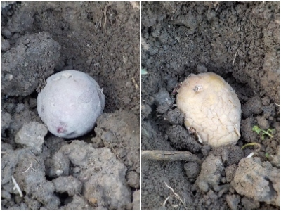
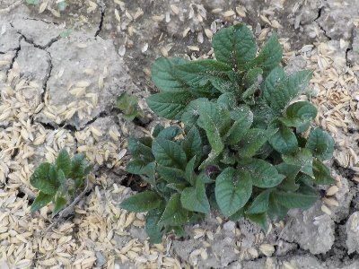
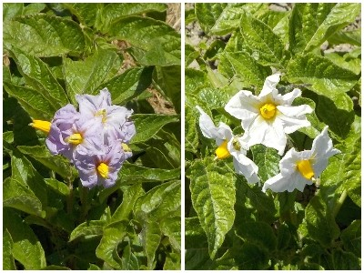
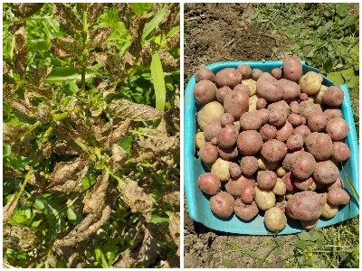

去年収穫して食べなかった小さいジャガイモを植えました。
更新日 : 2026/03/20

小さいジャガイモがいっぱい残っています。これの皮をむいたら更に小さくなって料理に使いにくいと思いました。
種芋にすれば有効活用になるかなと思い植えました。
今までも古いジャガイモを種芋にしたことはありますが、今年はかつてないくらい沢山の古いジャガイモを植えるつもりです。
病気とかで失敗したらガッカリですが、商売じゃなくて遊びなので、楽しんでやるぶんには問題ないかなと思いました。
更新日 : 2026/03/20

小さいジャガイモがいっぱい残っています。これの皮をむいたら更に小さくなって料理に使いにくいと思いました。
種芋にすれば有効活用になるかなと思い植えました。
今までも古いジャガイモを種芋にしたことはありますが、今年はかつてないくらい沢山の古いジャガイモを植えるつもりです。
病気とかで失敗したらガッカリですが、商売じゃなくて遊びなので、楽しんでやるぶんには問題ないかなと思いました。
更新日 : 2026/04/13

暖かくなってせいか、あちこちからジャガイモの芽が出ています。
早い時期に深く植えたジャガイモより、遅い時期に浅く植えたものの方が芽が出るのが早い気がします。
更新日 : 2026/05/16

花に栄養を取られるからってことで花を摘み取りました。
花の栄養なんて別に取られたっていいんじゃないの？って思ってますが、ここの畑の人は花摘みサボってるって思われると嫌なので取ってます。
更新日 : 2026/06/13

まだ青々としたジャガイモが多い中、しっかり茶色くなったものがあったので芋掘りしました。
本日の収穫はこんだけです。もっと掘りたかったんですが他の用事で出来ませんでした。
晴で時間があるときは当分じゃがいも掘りかな。
収穫したジャガイモは病気があるから植えてはいけないって言いますよね。でも食べるのはいいんだって思いました。